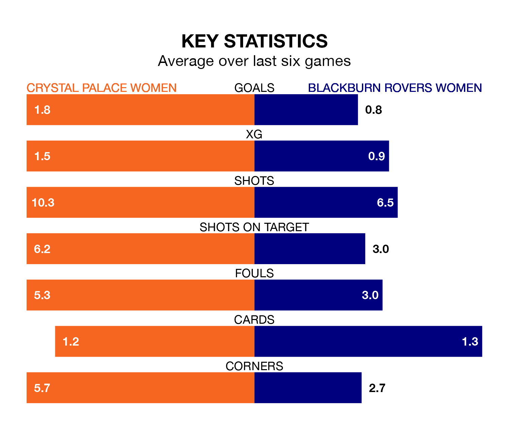

Blackburn Rovers Women travel to Crystal Palace Women on early Sunday in the FA Women's Championship.
The visitors come into the game on the back of a win in their last match, having beaten London City Lionesses 1-0 away, with a goal from Lucy Shepherd.
Crystal Palace also won their last match, 2-1 against Southampton Women, with their goals scored by Elise Hughes and Isibeal Atkinson.
With 39 goals in 14 games so far this season, Crystal Palace are the league's highest scorers with 2.8 goals per game. And they are conceding fewer than average, letting in 17 goals at a rate of 1.2 per game.
Blackburn Rovers, meanwhile, are below average scorers, with 0.8 goals per game, compared to a league average of 1.3. They have conceded 1.4 goals per game.
In Hughes, the hosts have the league's most on-form striker so far this season. She has notched 14 goals in 14 appearances.
The away team's top scorers, with two goals each, are Megan Hornby and Georgia Walters.
In the last 10 years, Crystal Palace and Blackburn Rovers have played each other on nine occasions. Crystal Palace won six of them, Blackburn Rovers two, and they drew once.
On average, Crystal Palace scored 2.1 goals and Blackburn Rovers 1.2 in those matches.
Their last meeting was on January 14, when Crystal Palace won 3-1 at home.
Crystal Palace are third in the table after 14 games, of which they have won eight and drawn three, earning 27 points.
Blackburn Rovers are three places behind Crystal Palace in sixth, with six wins and seven losses putting them on 18 points.
The home side are in mixed form in the FA Women's Championship, with three wins and a draw from their last six games.
With two wins and four losses over that period, Blackburn Rovers' form is worse – they have taken six points from 18, compared to Crystal Palace's 10.
Updated: 09:02 (UTC), 13/02/24